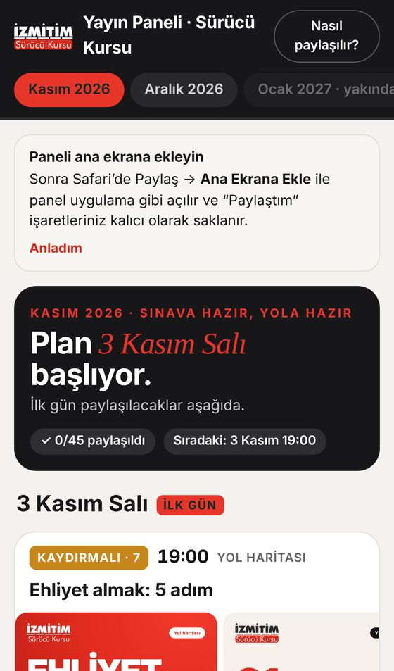

Kasım ve Aralık 2026 için hazır Instagram planı. Sınava hazırlanan adaya da, direksiyon başındaki sürücüye de faydalı bir hesap.
Telefondaki önizleme gerçek paylaşım planı. Bir gönderiye dokunun; kareleri, açıklamayı, paylaşım saatini ve neden seçildiğini görün.
Kırmızı, siyah ve beyaz; logodaki kepli araba her serinin parçası. Akışta içerik kimin diye sormaya gerek kalmıyor.
Sınav soruları, ceza tabloları ve kontrol listeleri tekrar açılmak için hazırlandı.
Sınav kuralları MEB'in 2026 e-Sınav kılavuzundan alındı. Ceza tutarları yayından önce resmî metinle son kez karşılaştırılır.
Takipçi bir sonraki bölümü bekler. Serilere dokunup örneğini açabilirsiniz.
Gerçek özel günler ve dönemler işlendi: 10 Kasım, 15 Kasım Dünya Trafik Kurbanlarını Anma Günü, kış lastiği dönemi, 24 Kasım, 3 Aralık ve yılbaşı.
Kısa, ritmik, müzikli videolar. İzlemek için dokunun. Ses açma düğmesi videonun üzerindedir.
Her içerik, açıklaması ve saatiyle telefondaki Yayın Paneli'nde sizi bekler. Dosyayı indirin, metni kopyalayın, paylaşın, işaretleyin.
